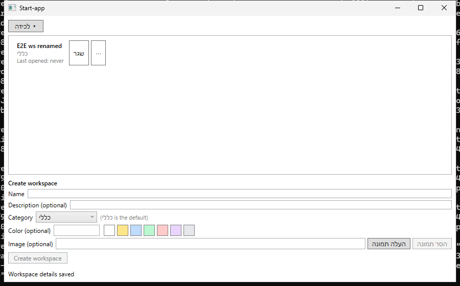
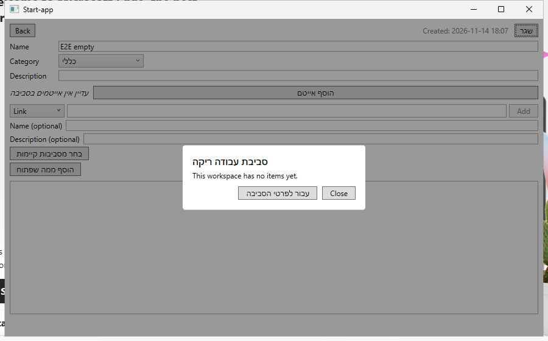

用户指南
指导 Start-app
一步一步：创建工作区、添加项目、捕获、启动和保存 - 使用应用程序的真实屏幕截图以及需要了解的重要限制。
评估原型，不是稳定版本
没有找到剧集。尝试其他单词或清除搜索。
这是什么 Start-app
Start-app 将程序、文件夹、文件和链接保存在一个环境名称下。下次打开计算机时，“运行”命令会一起打开所有项目，而无需再次选择每一项。
本指南伴随整个路线：主屏幕、创建环境、手动或通过捕获、编辑、启动和保存添加项目。章 已知的限制 将应用程序不执行的所有操作集中在一处。
系统和安装要求
打包目标是Windows x64。没有经过验证的 Mac 或 Linux 版本。
显示下载可用性 在主页上 并自动更新：当有经过验证的原型版本时，会有一个下载链接，以及版本号、文件大小及其 sha256，供安装前检查。
目前无法验证可下载版本。下载保持关闭状态。
技术细节
下载后激活
下载的是 ZIP 文件，而不是安装程序。下载后：
- 将 ZIP 中的所有文件解压到一个文件夹中。
- 打开解压的文件夹并运行
StartApp.App.exe. - 将 DLL 和运行时文件保留在该文件旁边的文件夹中。
将 ZIP 中的所有文件解压到一个文件夹。软件包布局未知；选择可执行文件前请查看该版本的说明。
解压 ZIP 中的所有文件。运行根文件夹中的 Start-app.exe，保留旁边的 App 文件夹，并始终整体移动文件夹。
当前项目的设计是一个包含其运行时的软件包，无需注册或登录，数据本地存储在设备上。每个提供下载的软件包的属性将在其获得批准时公布并验证。
该应用程序包含其运行时环境，因此无需单独安装.NET。无需注册、帐户或登录。数据保存到本地文件中%LOCALAPPDATA%\StartApp\store.json.
测试内容：此原型是作为独立的 Windows x64 应用程序构建的，并在托管的 Windows Server 2025 服务器上成功启动和关闭。未在家用 Windows 11 上进行独立测试，并且没有最低 Windows 版本承诺。不保证不会出现安全警告或防病毒软件警报。
主屏幕：环境视图
屏幕顶部是环境列表。每张环境卡片显示名称、描述、类别、所选的卡片颜色和图片、创建时间以及上次打开时间。上次打开时间在启动环境时更新，而不是在打开单个项目时更新。
每张卡片都有一个“启动”按钮和一个包含更多操作的“...”菜单。列表下方是创建新环境的表单，角落里有进入捕获界面的入口。

创造新的工作环境
在创建表单中，名称为必填项。默认类别为“常规”，您可以选择卡片颜色和图片。描述为选填项。保存后，会显示详细信息已保存的确认消息。

如果您尝试启动尚无项目的环境，则会显示一条消息，引导您查看环境的详细信息以添加项目。

手动添加项目
在环境详细信息屏幕中，添加四种类型的项目：站点、文件、文件夹和软件。每个项目都可以指定您自己的名称和描述。本地路径需要完整的 Windows 路径，而不是简短的软件别名。

屏幕上的项目按类型分组：网站、文件夹、文件和软件。每行都有一个编辑按钮和一个操作菜单。

捕捉：扫描、选择和复制
捕获扫描当前打开的内容：程序和 Windows 文件资源管理器，以及浏览器中的地址栏。浏览器来源有Chrome、Edge和Brave；目前还没有针对每个浏览器和版本的完整兼容性矩阵。扫描最多可能需要 10 秒。
保存前会显示结果以供选择。您可以从它们创建新环境或将它们添加到现有环境 - 通过搜索找到它。

创建新环境时，默认情况下会选中这些项目。添加到现有环境时：不带标记的操作为“添加全部”，带标记的操作为“添加选定的”。对环境中已保存的内容进行复制需要获得批准。并排屏幕添加内容将保持临时状态，直到您单击“保存”。

当可以识别捕获的站点时，它还会保存找到它的浏览器。

编辑环境和项目
环境卡的“...”菜单提供：查看、启动、添加项目、格式化卡和编辑类别。

设计卡片时，选择颜色和背景图像。对于每个项目，您可以编辑名称、描述和地址、复制地址、将其移动到列表中或将其从当前环境中删除。 “打开使用”保存到项目里面 Start-app 仅，而不更改 Windows 中的默认关联。

退出编辑且未保存更改会打开警告：保存并退出、退出而不保存或返回编辑。

开通前启动环境及测试
“运行”命令在打开之前检查项目，并区分已准备好、缺失、不受支持、不可用或需要决定的项目。需要做出决定的项目不会获得一般旁路。链接仅以 http/https 打开，软件需要完整路径。

确认后，应用程序向 Windows 发送打开每个项目的请求。理解这意味着什么很重要：发送的请求并不能证明所需的窗口确实打开了。该应用程序也无法可靠地判断确切的项目是否已打开，因此重新打开可能会创建重复项。未找到文件的项目会失败，并显示“未找到文件”消息。
已知的限制
- 软件无法自动识别打开的文档；打开的软件并不是在其中打开特定文件的证据。文档是手动添加的。
- 不保证恢复未保存的内容或窗口放置。
- “已经开放”无法可靠得知；重新打开可能会产生重复。
- 捕获可以在选项卡之间公开切换以读取地址。
- 部分捕获结果或空列表并不意味着没有任何打开的内容。
- 界面中无环境删除操作；您可以从环境中删除项目，但不能删除整个环境。
- “共享到另一个环境”可能会出现，但处于非活动状态。
保存和本地存储
在当前项目设计中，工作区保存在计算机上的本地文件中： %LOCALAPPDATA%\StartApp\store.json。仅当您明确单击“保存”时才会保存更改。
简而言之，隐私
在当前设计中，环境数据保存在本地计算机上。打开链接或软件会创建该目的地的常规通信 - 例如，在浏览器中打开一个网站会导致该网站。
本网站本身不包括表单、分析、远程字体或第三方服务。
常见问题
什么 Start-app 正在做？
将程序、文件夹、文件和链接保存在一个环境名称下，并通过“运行”命令将它们全部打开。
所有打开的东西都会恢复原样吗？
不保证。无法自动捕获程序中打开的文档、恢复未保存的内容或承诺窗口放置。打开是向操作系统发出请求，并进行初步检查和报告。
如何添加在软件中打开的文档？
手动：将文件本身添加为环境详细信息中的文件类型项。捕获无法从开放软件中自行识别它。
信息存储在哪里？
在计算机上的本地文件中。详细内容见章节 保存和本地存储.